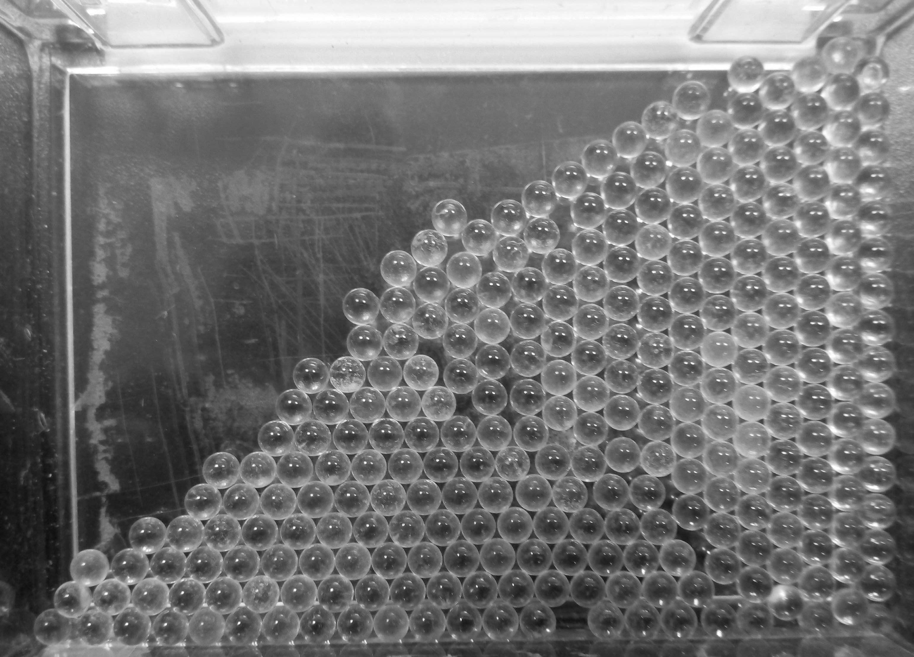

How Can We Observe Defects
In Experiments
Since defects in (natural occurring) crystals is the norm, observing them should a simple matter of putting the crystal under the microscope (or any other imaging device). One popular device in the TEM - Transmission Electron Microscope1. Also, since the images of crystals tend to be quite large, developing a method for automatically identify some defects could prove beneficial, as described in the aforementioned article. The results are easy to see:
Stages of processing the raw TEM image:
Identifying several defects in the crystal:
In Analog Experiments
A transparent plastic box with glass balls can be used to demonstrate crystalline structures. By slowly shaking the box, one can achieve different structures and defects - a perfect crystal, a crystal with vacancy defects, a crystal with dislocation defects and others. This process of slowly shaking the box of balls until they restructure themselves is somewhat akin to annealing. For interstitial defect, one can use larger plastic balls, so that a smaller glass ball could fit between them.
Example A
An almost perfect crystal, with some amorphous defects near the bottom.
Example B
A simple vacancy defect.
Example C
A bit amoprhous crystal.
Example D
A crystal with a dislocation defect, a void defect and a simple vacancy.

Example E
A dislocation defect and amorhpous edges.
Example F
An interstitial defect.

Using Simulations
In the Catalog section, there are some visualizations of different defects in crystals, but how are these visualizations obtained? Normally, another program does the heavy lifting of calculating the exact locations of the cells in an impure crystal, and outputs those locations to a text file (as described in the About AViz section).
For example, one can use LAMMPS to compute the unit cells' position in the crystal, as well as other properties such as potential energy. Such usage can be found in Eran Zvulun's project, which aims to reproduce the silicon nitride lattice, and to simulate the diffusion of several defects. The result is then visulized using AViz, producing (among others) the following animated gifs:
Lattice Visulization
A silicon-nitride lattice

Silicon-nitride with hydrogen defect
NVT (canonical) ensemble simulation of (Si₃N₄)₀.₉₉₇₄H₀.₀₀₂₆
 ensemble simulation of (Si₃N₄)₀.₉₉₇₄H₀.₀₀₂₆")
- 1: Elsey, M., & Wirth, B. (2014). Fast automated detection of crystal distortion and crystal defects in polycrystal images. Multiscale Modeling & Simulation, 12(1), 1-24.